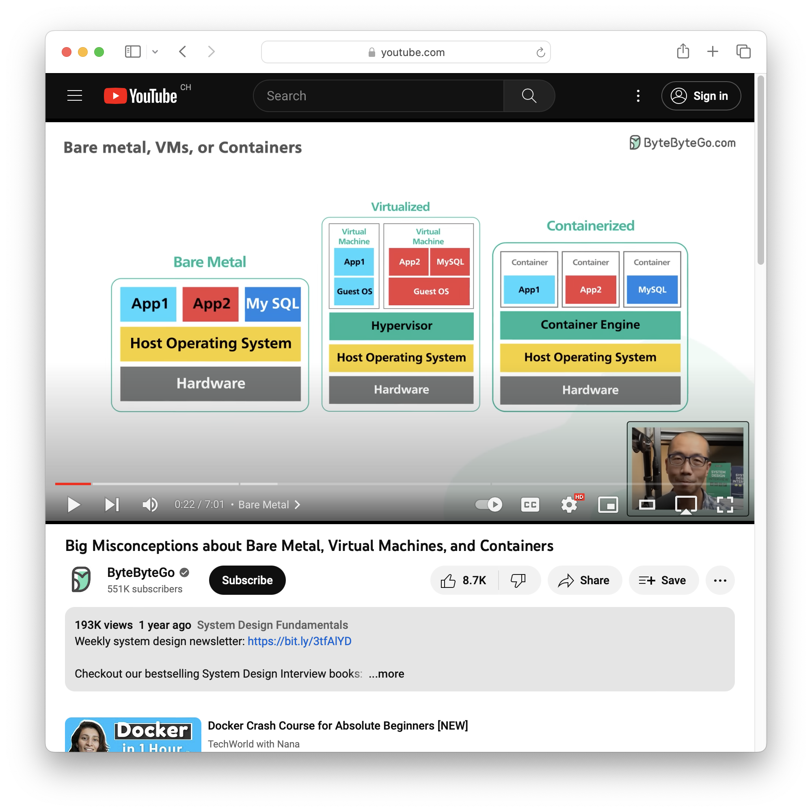

Docker and Docker Compose
Chapter 05
Objectives
By the end of this chapter, you should be able to:
- Explain the differences between bare metal, virtualization and containerization.
- Explain how the OCI specification defines images, containers and registries.
- Use Docker and Docker Compose to build, publish and run applications in containers, so they run anywhere Docker is installed.
Setup
Install Docker and Docker Compose
Install Docker Engine for your distribution from the repository (not Docker Desktop): Debian · Fedora · Ubuntu · others.
Then follow the post-installation steps: “Manage Docker as a non-root user” and “Configure Docker to start on boot”.
Install Docker Desktop. It runs Docker Engine and Docker Compose inside a virtual machine.
Check the installation:
docker --version
docker compose versionIf either command fails, make sure the Docker daemon is running.
Get the code examples
Clone (or pull) the course examples repository, then open examples/05-docker/ in your IDE. Each numbered example has a README explaining how to run it — we will refer to them throughout the chapter.
Bare metal, virtualization and containerization
These are three different ways to run software on a computer (remember: a server is just a computer — the “Cloud” is just someone else’s computer).

Bare metal — the traditional way: software is installed directly on the machine and has access to all its resources. Fastest, but no isolation.
Virtualization — software runs inside a virtual machine: a complete virtual computer, isolated from the host. Good isolation, but heavy: each VM boots a full operating system, which costs startup time, disk and memory.
Containerization — software runs in a container: an isolated environment that shares the host’s operating system kernel and starts only the application itself. Containers give you most of the isolation of a VM at a fraction of the cost — they start in seconds and are much lighter.
OCI: images, containers and registries
The OCI specification defines a standard for containers, implemented by Docker and other container engines. Three terms matter:
- Image — a read-only template with instructions for creating a container. An image is an executable package containing the application and all its dependencies. Images are immutable and built from layers.
- Container — a running instance of an image, isolated from the host and from other containers.
- Registry — a service that stores images, from which they can be pushed and pulled.
The default registry is Docker Hub. In this course we use the GitHub Container Registry (ghcr.io) so your images live next to your code.
Docker
Docker is a container engine composed of two parts:
- the Docker daemon — a background service that manages images and containers;
- the Docker CLI — the
dockercommand, which talks to the daemon.
On Linux the daemon runs natively; on macOS and Windows it runs inside a virtual machine.
Run your first container:
docker run hello-world:latestDocker pulls the hello-world image from Docker Hub (it is not on your machine yet), creates a container from it and runs it. The :latest tag is the default and can be omitted. Read the output — it narrates exactly these steps.
You can run a full Linux distribution the same way:
docker run --rm -it ubuntu /bin/bash--rmremoves the container when it exits.-itattaches your terminal interactively./bin/bashoverrides the image’s default command.
Inside, you can install software and modify files like on any system — and every change is lost when the container stops. Type exit to leave.
Dockerfile
A Dockerfile is a text file with the instructions to build an image, one layer per instruction. The most important instructions:
| Instruction | Role |
|---|---|
FROM |
base image to start from |
RUN |
run a command while building the image |
COPY |
copy files from the build context into the image |
ENTRYPOINT |
the executable to run when the container starts |
CMD |
default arguments (or default command) at container start |
WORKDIR |
working directory for subsequent instructions |
ENV, EXPOSE, VOLUME, ARG |
environment, ports, volumes, build args |
Build and run:
docker build -t <image-name> <build-context>
docker run <image-name>Work through code examples 01 to 05 (basic Dockerfile → entrypoint vs. command → run/copy → ports). The ENTRYPOINT vs. CMD distinction is a classic exam and interview question.
docker build -t <image-name> <build-context> # build and tag an image
docker run <image-name> # start a container
docker run -d <image-name> # ... in the background
docker ps # list running containers
docker stop <container-id> # stop a container
docker exec -it <container-id> /bin/sh # shell into a running container
docker run --entrypoint /bin/sh <image-name> # override the entrypoint
docker run <image-name> <command> # override the command
docker container prune # delete stopped containers
docker image prune # delete unused imagesDocker Compose
Docker Compose runs multi-container applications (a stack — e.g. a backend and its database) declared in a single YAML file, compose.yaml. The file is versioned with your application, which makes the whole stack reproducible with one command.
A Compose file declares:
- services — the containers of the stack;
- volumes — directories shared between host and containers, to persist data;
- networks — how services communicate.
docker compose up # create and start the whole stack
docker compose down # stop and remove everything it createdWork through code examples 06 to 09 (basic Compose → ports → volumes → environment variables).
docker compose up # start all services (creates resources)
docker compose up -d # ... in the background
docker compose ps # list running services
docker compose down # stop and remove created resources
docker compose stop # stop without removing
docker compose start # restart previously stopped services
docker compose logs [-f] [<service>] # inspect (follow) logsdocker compose vs. docker-compose
Old tutorials use docker-compose (v1, Python, deprecated). The current version is v2, invoked as docker compose. If you find an old example, just replace the hyphen with a space.
Docker networks
Containers are isolated by default: they cannot talk to each other unless they share a network.
docker network create <network-name>
docker network list
docker network rm <network-name>Services declared in the same Compose file are connected to a default network automatically, and each container can be reached by its service name (Docker provides DNS resolution on the network). Custom networks let containers from different stacks communicate.
Work through code examples 10 and 11 (container-to-container communication with Docker, then with Docker Compose).
Exercises
You will containerize the CLI application from the Java IOs chapter. If you do not have your own, clone and compile that chapter’s solution to get the JAR file.
Exercise 1 — Package your application
Create a file named Dockerfile (no extension) at the root of your Java IOs project, starting from:
# Base image: Java 21 runtime (JRE), provides the `java` command
FROM eclipse-temurin:21-jreComplete it so the image contains your JAR and runs it on start. Then build and validate:
docker build -t java-ios-docker .
# Write, then read, a file through a mounted volume
docker run --rm -v "$(pwd):/data" java-ios-docker \
--implementation BUFFERED_BINARY /data/100-bytes.bin write --size 100
docker run --rm -v "$(pwd):/data" java-ios-docker \
--implementation BUFFERED_BINARY /data/100-bytes.bin readNote how the volume (-v) lets the container read and write files on the host — without it, each run would be isolated and the files lost.
# Base image
FROM eclipse-temurin:21-jre
# Set the working directory
WORKDIR /app
# Copy the jar file
COPY target/java-ios-1.0-SNAPSHOT.jar /app/java-ios-1.0-SNAPSHOT.jar
# Set the entrypoint
ENTRYPOINT ["java", "-jar", "java-ios-1.0-SNAPSHOT.jar"]
# Set the default command
CMD ["--help"]ENTRYPOINT fixes what runs (the JAR); CMD provides the default arguments (--help), which are replaced by whatever you pass to docker run.
Exercise 2 — Publish to the GitHub Container Registry
- Create a personal access token (classic) with the
write:packagesscope, following the official guide (GitHub → Settings → Developer settings → Personal access tokens). - Log in, tag, and push (replace
<username>with your GitHub username):
docker login ghcr.io -u <username> # password = the token
docker tag java-ios-docker ghcr.io/<username>/java-ios-docker:latest
docker push ghcr.io/<username>/java-ios-dockerCheck the result at https://github.com/<username>?tab=packages. The image is private by default; you can change its visibility in the package settings. Anyone (with access) can now run your application with nothing but Docker installed.
Exercise 3 — Run the published image with Docker Compose
Pull your published image, then write a compose.yaml with two services using it:
writer— writes100-bytes.bininto a mounted/datavolume;reader— reads it back.
docker compose up writer
docker compose up readerservices:
writer:
image: ghcr.io/<username>/java-ios-docker
command:
[
"--implementation=BUFFERED_BINARY",
"/data/100-bytes.bin",
"write",
"--size=100",
]
volumes:
- .:/data
reader:
image: ghcr.io/<username>/java-ios-docker
command:
- --implementation=BUFFERED_BINARY
- /data/100-bytes.bin
- read
volumes:
- .:/dataThe command can be written as an inline array or as a YAML list — both forms are shown here.
Exercise 4 — Share your work
Push the project to a new Git repository and share the link in the course GitHub Discussions (category Show and tell, title [DAI 2026-2027 Class <ID>] My Docker Compose application — <first name> <last name>), with a screenshot of your published image. This tells us you completed the exercise so we can check your work.
Try the exercises yourself before opening the solutions — that is where the learning happens.
Test your knowledge
- What is the difference between an image and a container?
- What is the difference between a Dockerfile and a Docker Compose file?
- What is the difference between
ENTRYPOINTandCMD? - What is the difference between
RUNandCMD? - How can a volume be used to persist data?
Go further
Optional content — useful general knowledge, not required for the evaluations.
Can you use environment variables in your Compose file to select the implementation and the file size? Hints: you will need a shell entrypoint (/bin/bash -c …) to expand the variables, the $$ syntax to escape them in the Compose file, and the environment key to define them.
A container is not a security boundary. The Docker daemon runs as root and has full access to every container; a vulnerability in a container can compromise the host. Run containers as a non-root user whenever the image allows it.
docker build sends the whole build context to the daemon. A .dockerignore file (same syntax as .gitignore) excludes what the build does not need — e.g. a Maven target/ directory or private keys.
A HEALTHCHECK instruction (or a healthcheck: key in Compose) defines a command Docker runs periodically to decide whether a container is healthy — i.e. actually ready to accept requests, not merely started:
healthcheck:
test: ["CMD", "curl", "-f", "http://localhost/"]
interval: 30s
timeout: 10sMulti-stage builds separate a builder image (compilers, sources, dependencies) from a runner image that only receives the build artifacts — dramatically reducing the final image size. Multi-architecture builds produce one image usable on amd64, arm64, etc.; the right variant is selected automatically at pull time. See the official documentation: multi-stage · multi-platform.
Images, containers and volumes accumulate. Reclaim disk space with:
docker system prune --all --volumesContainer engines: podman, containerd, LXC. Orchestrators beyond Compose: Kubernetes, Docker Swarm, Nomad. On macOS: OrbStack, Colima. Registries: GitLab Container Registry.
Additional resources
Sources
- Adapted from the HEIG-VD DAI course by L. Delafontaine and H. Louis, licensed CC BY-SA 4.0.
- Main illustration by CHUTTERSNAP on Unsplash
Docker and Docker Compose – DAI — Développement d’applications internet Docker and Docker Compose – DAI — Développement d’applications internet Docker and Docker Compose – DAI — Développement d’applications internet DAI — Développement d’applications internet Chapter 05 Chapter 05